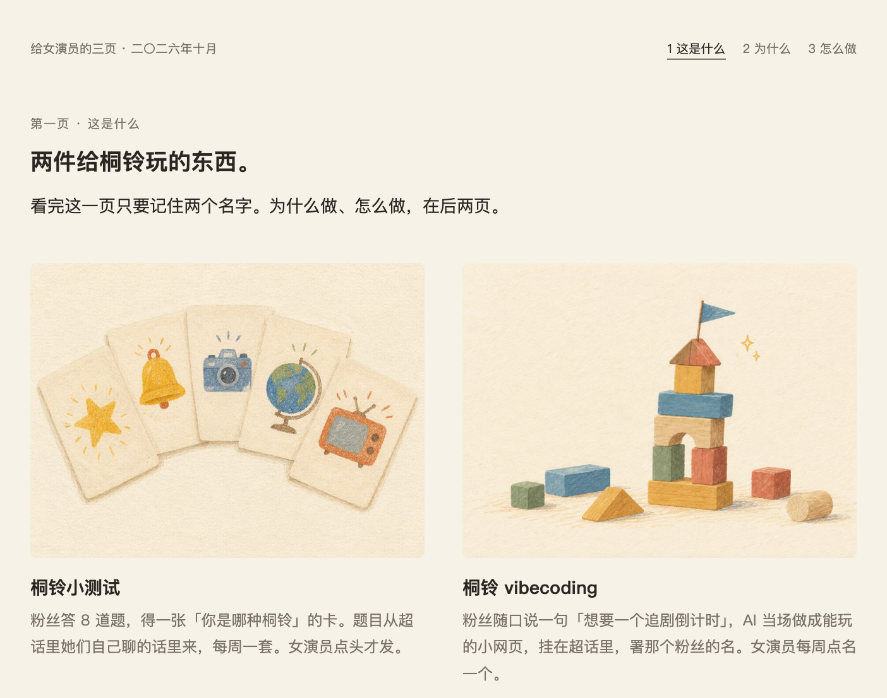
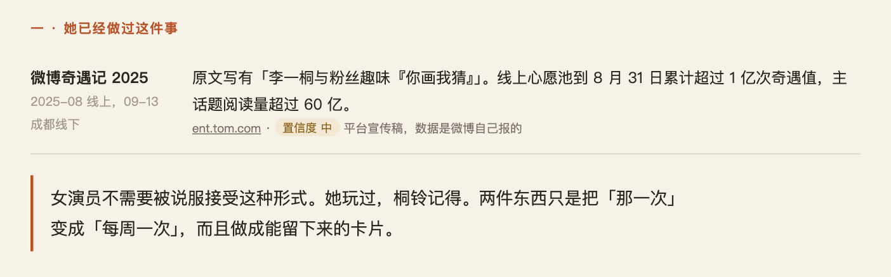
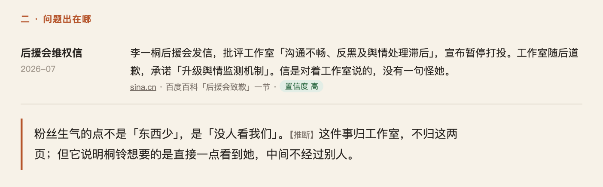
屏 3第二页 · 二
「她们七月写的，一句没怪你。气的是没人回。」
停两秒，翻。
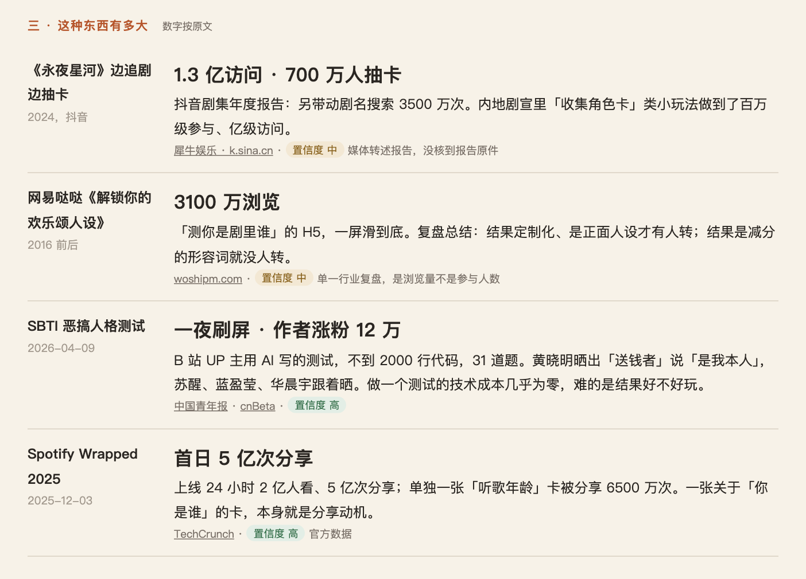
屏 4第二页 · 三
先不说话，让她自己看完四个数。
「一张『你是谁』的卡，就能有这么多人晒。」
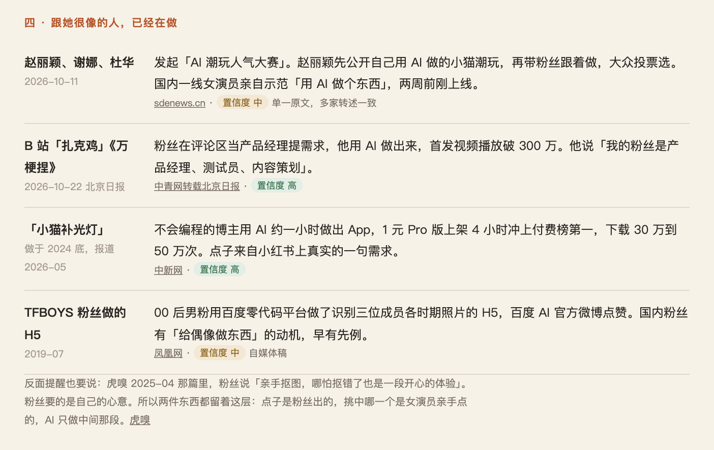
屏 5第二页 · 四
「这三个人没有自己做一行东西。他们只是出现，然后挑。」
赵丽颖、扎克鸡、小猫补光灯。
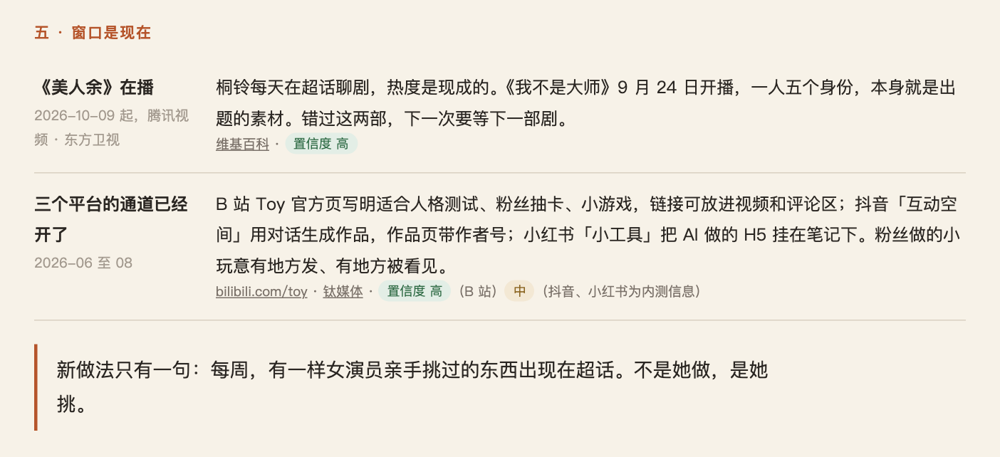
屏 6第二页 · 五
「窗口是这一个月。」
翻到站点。
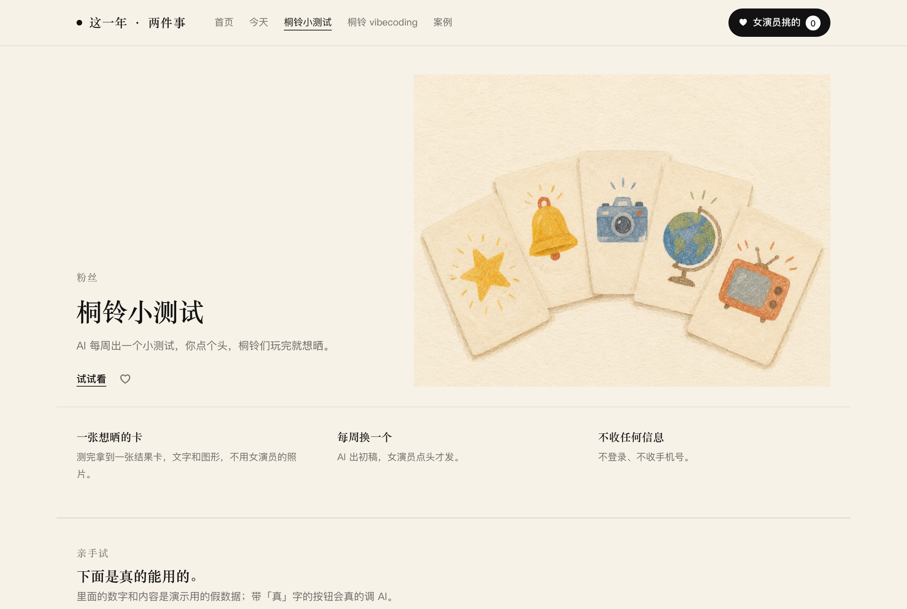

屏 8站点 · 结果卡
「这就是粉丝拿到的。」
她点「保存图片」。
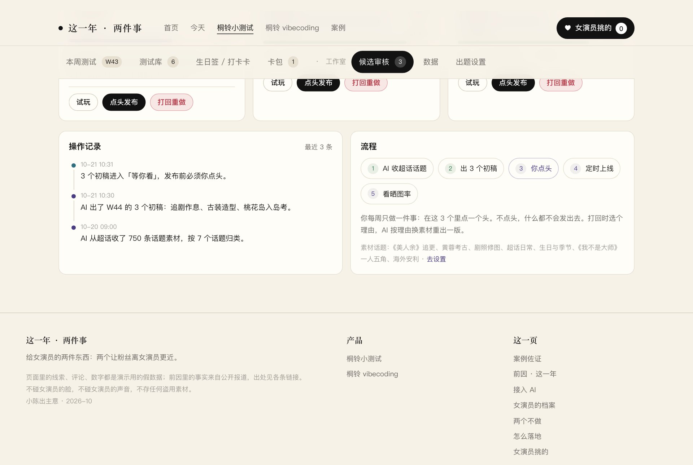
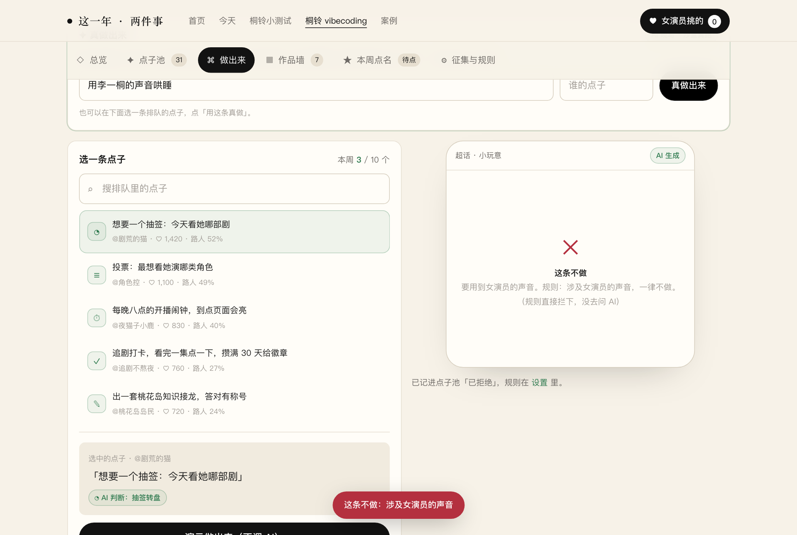
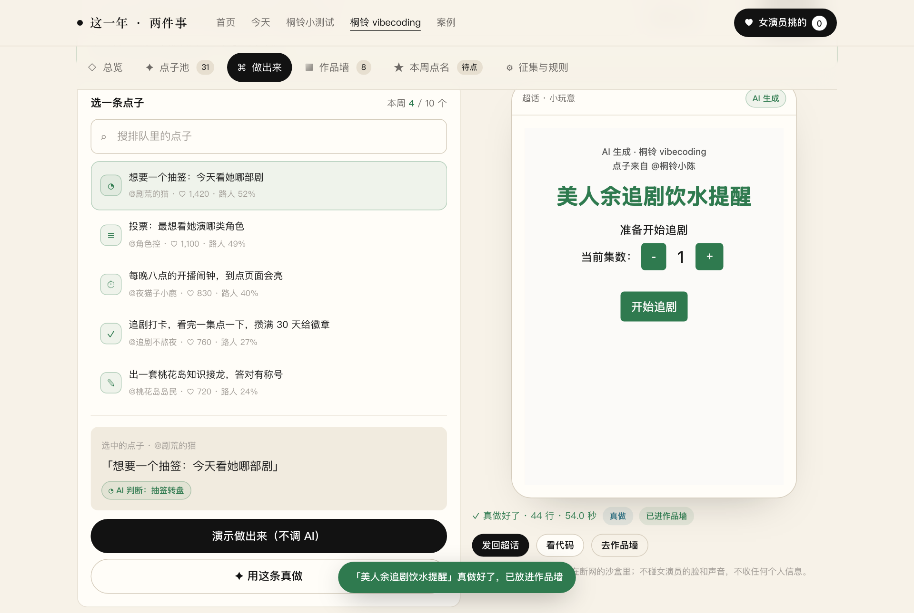
屏 11站点 · 做出来 · 真做
「玩两下。」
她说一句想要的，我打进去，点「真做出来」。等二十到五十秒，右边跑起来。这张截图是真跑出来的：44 行，54 秒。

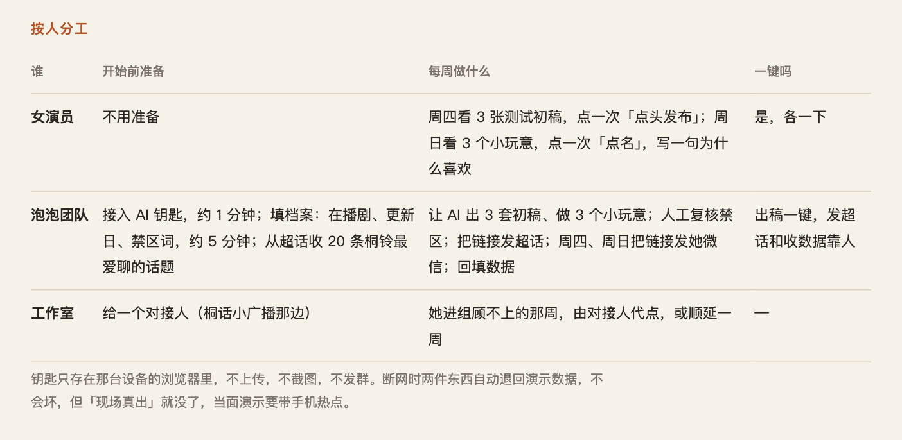
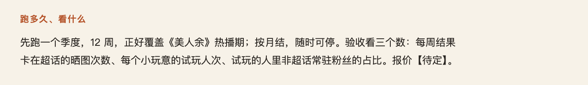
屏 14第三页 · 跑多久、看什么
「十二周，按月，随时停。看三个数。」
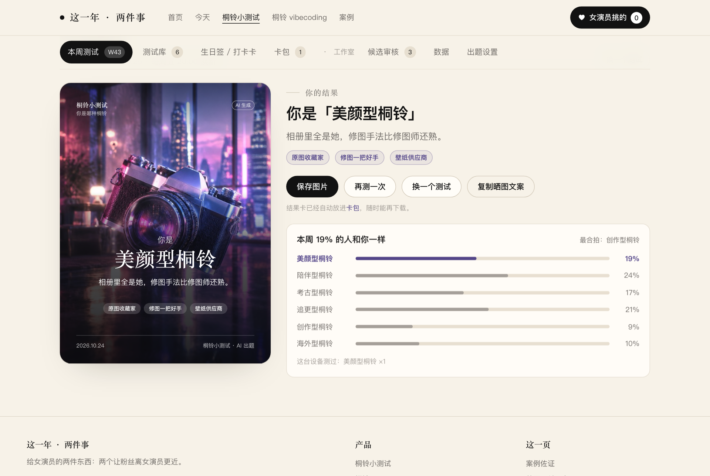
屏 15回到她刚存的那张结果卡
「这周四发第一期。发不发，你说。」
然后不说话。
用法
上下键或滑动翻页。每屏右边那一句说完就停，其余时间是她在看和点。十五屏说的话加起来不到三百字。
屏 7 到 12 是站点真机操作，当面演示前先在那台设备上接入 AI 钥匙（接入），带手机热点。屏 11 的「真做出来」要等二十到五十秒，等的时候不要讲话，让她看左边代码在滚。
截图取自 2026-10-24 本地两件事版站点和三页；页面里的人数、留言都是演示假数据。红线：不用她的脸和声音；不碰她的工作；不收集粉丝个人信息。